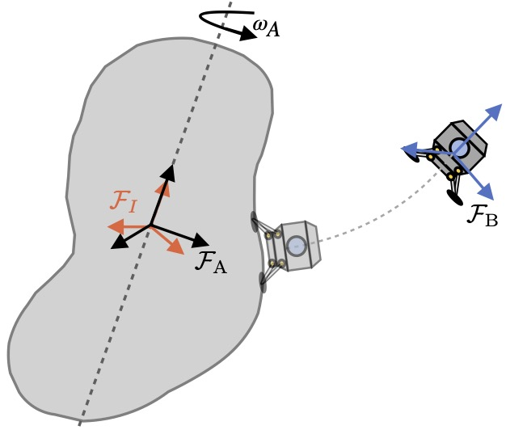
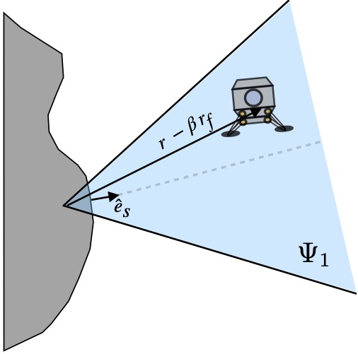
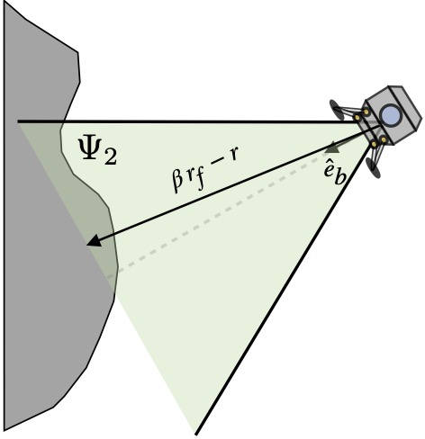
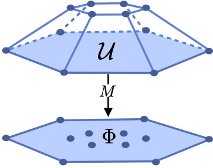

Abstract
Soft landing on small celestial bodies (SCBs) presents control challenges due to highly irregular gravitational fields that are poorly captured by models. For overactuated spacecraft, these challenges are compounded by the need to manage coupled 6-DOF dynamics while satisfying actuator limits. This paper proposes an optimal control strategy that combines disturbance estimation, trajectory tracking, and safety enforcement for fully actuated and overactuated spacecraft. We map actuator constraints onto the lower-dimensional space of forces and torques using a polytope projection algorithm. This transforms the control variable from actuator inputs to control forces and torques, and allows to represent the actuator constraints as constraints on the forces and torques. Next, an extended high-gain observer provides real-time estimation of gravitational disturbances, while a nominal control is designed using a feedback-linearizing controller to track position and attitude reference trajectories. To guarantee safety, a minimum-intervention quadratic program utilizing Control Barrier Functions enforces state and input constraints. Finally, an optimal control allocation maps the safe forces and torques to the actuator inputs. Numerical simulations on irregularly shaped SCBs demonstrate that the proposed controller achieves safe landings across various actuator configurations, offering a robust algorithm for autonomous space missions.
Problem Formulation
A spacecraft must descend to a target touchdown site on a small, irregularly-shaped asteroid. Beyond simply reaching the surface, the vehicle must satisfy safety and input constraints:

Spacecraft orbiting an asteroid. Opaque spacecraft represents desired landing pose.

A glideslope constraint keeps the spacecraft inside an approach cone to avoid collisions with unieven terrain or other objects.

A boresight cone keeps the spacecraft pointed towards the landing site throughout the approach.
Actuator Constraints as Force and Torque Constraints via Polytope Projection

Control Architecture

Simulations
We evaluated the performance of the controller using two types of spacecraft: a robotic lander (similar to Hayabusa 2) and a Crewed Landing Module. Each spacecraft involves a different actuator configuration using bi-directional thrusters or reaction wheels. Moreover, two landing environments are considered: an ellipsoidal asteroid with uniform density distribution and an irregularly-shaped asteroid with non-uniform density distribution.
BibTeX
This journal manuscript is currently under review; the citation below will be updated upon acceptance. A preliminary version of this work is available now as a conference paper (ACC 2026 submission).
@article{arenas2026safe,
title={Safe Position and Attitude Control for Landing on Small Celestial Bodies with Gravitational Uncertainty},
author={Arenas-Uribe, Felipe and Seigler, T. Michael and Hoagg, Jesse B.},
journal={Frontiers in Robotics and AI},
note={Under review},
year={2026}
}